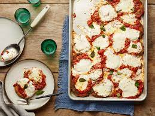

Eggplant Parm

How to Make Eggplant Parm
Eggplant Parm is usually too oily, but with this no fry version, you get all the falvor with none of fat.
And it's simple, only requireing a few ingredients.
Ingredients
- 2 Eggplants
- 1 Jar Marinara Suace
- Shredded Mozzerella Cheese
- Breadcrumbs
- 2 Eggs
Steps
- Cut the eggplant into sliced
- For every slice dip into egg and breadcrumbs
- bake
- Layer ingredients
- bake again
Back